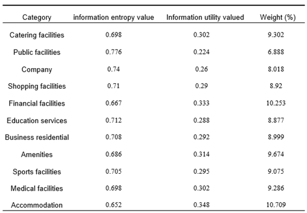

Abstract
With urban development and a growing focus on sustainability, shared bicycles have become a popular mode of eco-friendly transportation. However, issues like chaotic parking, excessive deployment, and suboptimal distribution need solutions. This study analyzes shared bicycle usage in Wuhan, focusing on time and location patterns to inform better docking point selection. It uses GPS data from Mobike shared bicycles in October 2018, point of interest (POI) data, and population distribution data for Wuhan. The research employs mathematical and statistical analysis, spatial analysis, geographical detectors, and optimization methods. The study uncovers usage patterns, highlights travel trends, and identifies the relationship between factors like POIs, public transportation facilities, population density, and shared bicycle usage. It establishes a model called the Maximum Covering Location Problem (MCLP) for selecting docking points, considering demand intensity. In summary, this study deepens our understanding of shared bicycle usage in Wuhan, provides a model for selecting docking points, and offers valuable insights for urban transportation planning and sustainability.
Background
As a green and environmentally friendly mode of transportation, shared bicycles have been widely promoted and applied in recent years. They possess several unique advantages. Firstly, shared bicycles are considered an important means of reducing the pressure of motorized vehicle travel and mitigating traffic pollution, as they represent a green and sustainable transportation option. Secondly, the "pick up and drop off anywhere" characteristic of shared bicycles plays a crucial role in addressing the "last mile" challenge in urban transportation.However, in the actual operation process, shared bicycles also face several challenges. The most apparent issue is the problem of indiscriminate parking, which significantly disrupts urban traffic order and residents' normal lives. Secondly, the shared bicycle market is in a phase of excessive deployment, with many companies deploying a large number of bicycles to compete for market share, resulting in wastage of operational costs and resources. Finally, there are irrationalities in the spatial distribution of shared bicycle deployments, with some demand areas being underserved or even completely neglected, which contradicts the original intention of addressing the "last mile" for citizens. Therefore, it is necessary to scientifically and reasonably select shared bicycle parking points, taking into account factors such as population density, traffic conditions, and user demand to enhance the utilization and convenience of shared bicycles.
Experiments And Analysis
（1）Spatial Distribution of Bike-sharing
We import the bike-sharing trip records extracted from GPS location data, including the bike borrowing statistics table and the bike returning statistics table. Divide the study area into a grid with a size of 1 kilometer, and calculate the number of bike borrowings and returns within each grid cell. Finally, extract the bike-sharing ride destination distribution.

Picture1：The distribution of bike-sharing in Wuhan City on weekdays(left) and weekends(right).
（2）Factors Influencing the Spatial Distribution of Bike-sharing
Points of Interest (POI) to some extent can represent the level of land develop-ment in a particular area and can indicate the economic status of that area. Therefore, analyzing POIs helps establish a direct connection between shared bicycles and economic develop-ment. Through this analysis, we found significant correlations between the distribution of shared bicycles and Points of Interest such as dining, shopping, finance, business, lifestyle services, and sports and leisure. These findings are valuable for studying the usage patterns of shared bicycles. To quantify the impact of Points of Interest on shared bicycle usage, we employed the entropy weight method to calculate the influence of each POI and obtained a comprehensive Points of Interest index through weighted summation.
Table1：The Results of Entropy Weighting.
Shared bicycles provide a crucial solution to the "last-mile" transportation challenge, particularly for short to medium-distance journeys and enhancing connectivity with urban public transportation networks. Existing research highlights the substantial influence of public transportation facility locations on the distribution of shared bicycles. These facilities primarily comprise subway stations and bus stops. To evaluate their correlation with shared bicycle distribution, we conducted separate analyses for these two types of facilities.In our subway station analysis in Wuhan, we employed circular buffer zones with different radii to scrutinize shared bicycle borrowing and returning activities. For bus stops, given their dense presence in Wuhan, we adopted buffer zones with radii of 100 meters, 300 meters, and 500 meters to ensure a reliable analysis without overly broad coverage. In summary, the proximity of shared bicycles to public tran-sportation facilities significantly affects their utilization. We can gauge the accessibility of public transportation for each grid cell by measuring the distance to facility locations. Notably, subway stations and bus stops have distinct impacts on shared bicycle usage, necessitating separate assessments.
Picture2：The bike-sharing distribution density around subway Stations (left),Bike-sharing pick-up(top right) and drop-off counts around bus stops(bottom right).
The study conducted a kernel density analysis of shared bicycle borrowing and returning points in Wuhan city and incorporated population data for Wuhan in 2018. It can be concluded that there is a significant correlation between the frequency of shared bicycle usage and population density. In densely populated areas such as Wuchang District, Hankou District, Jianghan District, and others, the borrowing and returning frequency of shared bicycles is the highest.

Picture3：Distribution Kernel Density Map of Shared Bicycles in Wuhan City (Left) and Population Density Map (Right).
Result
In this study, we used a Genetic Algorithm (GA) to solve the MCLP model, identifying 500 deployment points for shared bicycles, each with a service radius of 500 meters. We defined specific parameters, including a maximum of 100 iterations, 25 individuals per generation, with 10 individuals selected for reproduction, and a 30% mutation probability, to address this challenge. The final solution satisfies the maximum demand intensity.
Picture4：The Bike-sharing Site Selection Results Obtained Using Genetic Algorithm for the MCLP Model.
This study primarily combines the analysis of multi-source geospatial big data related to shared bicycle travel distribution in Wuhan City. It identifies the significant factors influencing shared bicycle distribution, determines the weights of these factors, defines demand points and candidate points, and calculates the demand intensity for each demand point. Based on this, a genetic algorithm is employed to address the problem of optimizing the deployment of shared bicycles in Wuhan City. This research offers valuable guidance for the development of shared bicycles in Wuhan City. However, there are still some limitations in this study: it exclusively uses a genetic algorithm as a part of the heuristic approach for problem-solving without conducting comparative analyses with other optimization algorithms or solvers. Additionally, the shared bicycle travel data used in this study were recorded during the National Day holiday period in Wuhan City, which may differ from daily travel patterns.